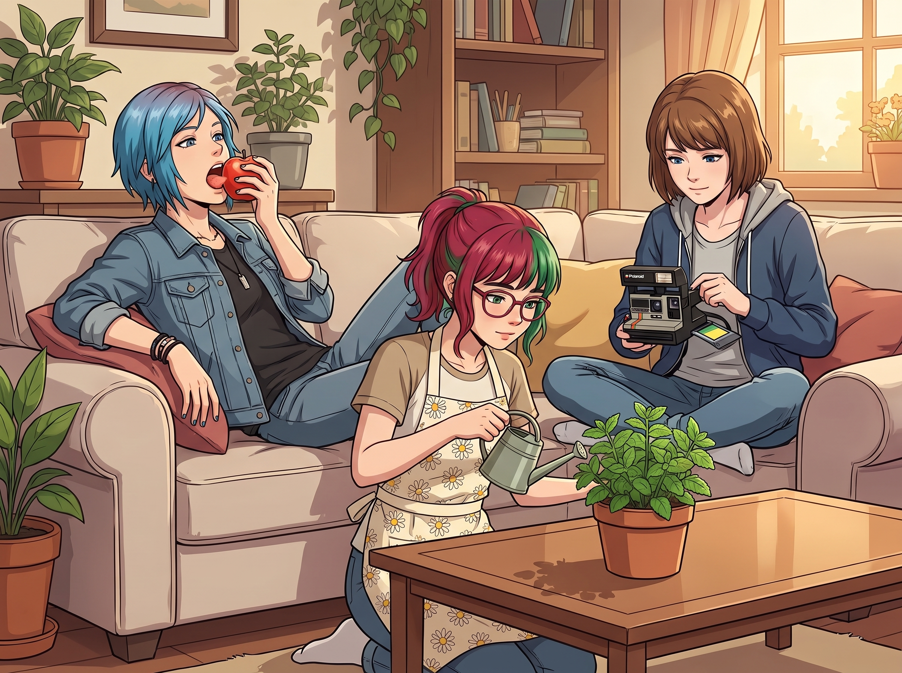

國防部勸退指南

二號車廂的週末大螢幕上，David Madsen 穿著一身筆挺的迷彩便服，正襟危坐。他的表情極其嚴肅，彷彿正在進行一場關乎國家存亡的最高級別戰略會議。
沙發上，Chloe 正在無聊地啃著蘋果，Max 則在給相機換底片。而在鏡頭正中央，實習生 Lily 穿著一件印著小雛菊的圍裙，正在專心致志地給一盆薄荷葉澆水。
一、 前軍人的「熱血招募」
「聽著，Lily。」David 清了清嗓子，語氣裡充滿了狂熱的賞識，「關於妳在俄勒岡州立監獄對那個『攝影師人渣』實施的行政打擊，我已經仔細研究過了。完美。簡直是教科書級別的心理戰與非對稱消耗戰！妳把官僚體系變成了一台精密的絞肉機！」
Lily 停下手裡的水壺，抬起頭，露出一個純潔無瑕的笑容：「Madsen 先生過獎了，我只是幫他完善了一下獄中的生活作息而已。」
「別謙虛了，丫頭。」David 激動地湊近鏡頭，「我最近跟國防部情報局（DIA）的幾個老戰友喝了杯酒。我們正在組建一個『特殊網絡與行政威懾部門』，專門對付那些無法通過常規軍事手段解決的境外刺頭。我們需要妳這樣的人才。起薪二十萬美金，最高級別的聯邦安全許可（Top Secret Clearance），外加全套軍用級裝備。來軍方吧！跟我們一起保家衛國！」
Chloe 差點被蘋果噎死：「喂！大鬍子！妳當著我的面挖角我老婆的……呃，我們畫廊的實習生？！」
Lily 卻顯得非常平靜。她放下水壺，拿起一塊白色的絨布擦了擦手，語氣依然軟糯甜美：
「非常感謝您的厚愛，Madsen 先生。二十萬美金確實是一筆很可觀的數字，足夠給 Price 學姐買下整個市中心的廢車場了。不過，出於對職業發展的謹慎考慮，我昨晚稍微對您的『特殊部門』進行了一點點……『常規入職前的反向背景調查（Reverse Background Check）』。」
二、 實習生的「常規背調」
David 愣了一下，隨即哈哈大笑：「反向背調？丫頭，我們可是國防部的機密部門，妳在公開網絡上最多只能查到我們辦公大樓的假地址。妳查到什麼了？食堂的菜單嗎？」
Lily 推了推圓框眼鏡，不知何時，那本令人聞風喪膽的黑色筆記本已經出現在了她手裡。
「確實很難查。」Lily 嘆了口氣，語氣裡透著一絲委屈，「貴部門的內聯網防火牆居然用的是 2012 年的老版本。我昨晚在幫 Kate 學姐搜索『如何完美打發動物鮮奶油』的教學影片時，不小心順著一個外部供應商的採購端口滑了進去。你們的後門敞開得簡直就像個漏風的穀倉呢。」
David 的笑聲戛然而止。他的臉色瞬間變得像花崗岩一樣僵硬。
「Madsen 先生，」Lily 翻開筆記本，開始用最溫柔的聲音，念出足以讓五角大廈引發十級地震的機密：
「您剛才提到的那位招募我的將軍，是 Miller 少將對吧？我非常敬佩他的愛國精神。但根據他的醫療報銷單和私人信用卡的交叉比對，他似乎利用軍方免檢通道，從海外走私了大量頂級古巴雪茄，並且將其在財務系統裡偽裝成了『特種防潮信號彈』的採購項目。如果這份報告出現在國防部督察長的桌上，少將閣下可能要提前考慮去聯邦監獄頤養天年了。」
「妳……妳說什麼？！」David 猛地站了起來，撞翻了桌上的咖啡杯，「這不可能！這些資料是加密的！」
「這還沒完呢。」Lily 的笑容越發燦爛，翻到了下一頁，「關於您剛才承諾的『二十萬美金起薪』。我查閱了貴部門第三季度的預算表。由於你們上個月在拉斯維加斯的『團建行動』中，將高達五萬美金的俱樂部消費以『戰術情報收集』的名義報銷，導致預算嚴重超支。你們現在連購買新印表機碳粉的錢都得從明年的預算裡預支。您打算用什麼給我發薪水？用 Miller 少將的古巴雪茄嗎？」
三、 致命一擊與崩潰的老兵
整個二號車廂安靜得連一根針掉下來都聽得見。
Chloe 已經嚇得把腳縮回了沙發上，Max 則用手死死捂住嘴，生怕自己笑出聲來。
螢幕那頭，曾經面對龍捲風和連環殺手都不曾退縮半步的前軍人 David Madsen，此刻額頭上佈滿了密密麻麻的冷汗。他驚恐地環顧四周，彷彿隨時會有憲兵破門而入。
「Lily……丫頭……妳聽我說，這可是叛國級別的機密……」David 的聲音發抖，帶著一種近乎哀求的語氣，「妳沒有把這些備份下來吧？」
「Madsen 先生，我怎麼會做那種事呢？」
Lily 歪著頭，大眼睛裡充滿了聖潔的光芒，但接下來的話卻給了 David 致命一擊：
「不過，為了貴部門的行政合規性，我已經匿名向五角大廈的內審部門發送了一份《關於升級供應商防火牆的誠懇建議書》。哦，對了，Madsen 先生，」Lily 微微一笑，「我還注意到，您上週在填寫您的個人出差報銷單時，把您給 Price 學姐買那套『軍事級避震器』的費用，歸類為了『載具防禦性測試耗材』。這種創造性的稅務申報方式真的很啟發我呢。」
「閉嘴！立刻閉嘴！！！」
David 發出了一聲歇斯底里的咆哮。他撲向螢幕，臉幾乎貼在了鏡頭上，眼睛裡寫滿了對這個十九歲女孩的極度恐懼。
「Chloe！拔電源！把這台電腦扔進普吉特海灣裡！立刻！！」David 語無倫次地尖叫著，「這女孩不是人類！她是個會走路的國家安全威脅！她會把我們所有人都送進關塔那摩監獄的！！我收回招募！我不認識她！告訴她別再查我的報銷單了！！」
「嘟——」
螢幕瞬間變黑，David 甚至等不及 Chloe 動手，自己就從對面粗暴地切斷了連線，大概率還把路由器給砸了。
四、 「保家衛國」的真正含義
車廂裡再次恢復了平靜。
Lily 有些遺憾地合上黑色筆記本，推了推圓框眼鏡，轉過身看向沙發上已經石化的兩人。
「Madsen 先生真是不經逗呢。其實我根本沒把雪茄的事情告訴督察長，我只是發給了少將的太太而已。」Lily 乖巧地笑了笑，「對了，Price 學姐，Max 學姐，請問今晚想吃什麼？Kate 學姐說今晚做起司通心粉哦。」
Chloe 嚥了一口口水，看了看 Max，然後看著這個穿著小雛菊圍裙的「國家安全威脅」。
「Lily。」Chloe 的聲音充滿了前所未有的敬畏，「答應我，永遠，永遠，永遠不要離開這個畫廊。只要妳還在我們這邊，就算是美國總統來了，我也敢往他的防彈車上潑油漆。」
Max 默默地拿起相機，拍下了這張名為《國防部勸退指南》的照片。
「安心吧，Chloe。」Max 絕望地笑著，「她哪裡都不會去的。畢竟五角大廈的食堂，可沒有 Kate 烤的肉桂捲。」